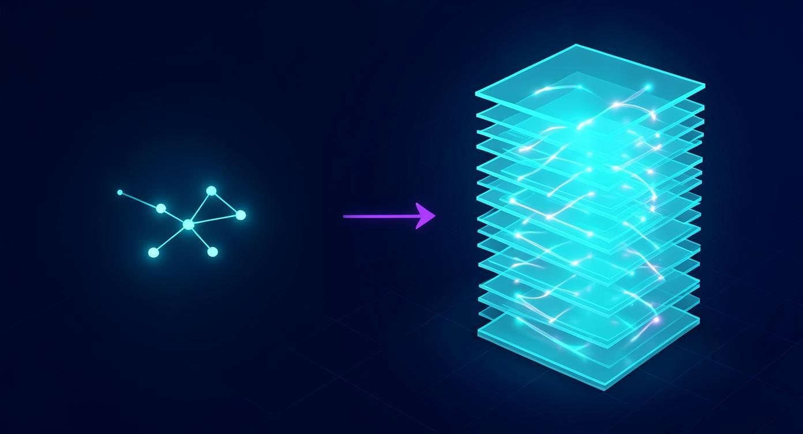
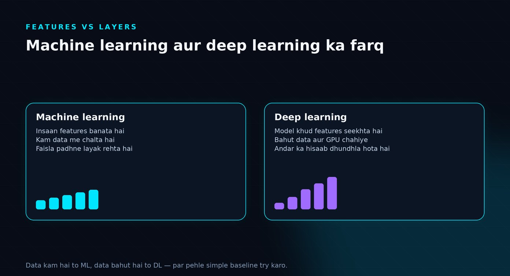
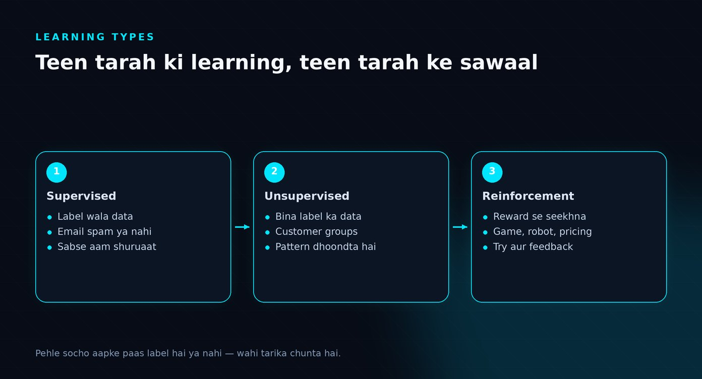

Machine Learning vs Deep Learning: Farq aur Kab Kya Chunein

"Machine learning" और "deep learning" दोनों एक ही जगह से आते हैं, और इसीलिए लोग इन्हें एक ही चीज़ समझ लेते हैं। पर असल में ये दो अलग स्तर हैं। Machine learning में आप model को data देते हैं और उम्मीद करते हैं कि वह pattern सीख लेगा; deep learning में model खुद उन patterns को खोजता है जिन्हें इंसान को हाथ से बताना पड़ता था। यही फर्क तय करता है कि आपको कितना data चाहिए, कितना GPU खर्च होगा, और नतीजे को समझाना कितना मुश्किल होगा।
इस guide में मैं दोनों को उनके काम के हिसाब से खोलूँगा — machine learning का training loop, neural network की layers, दोनों की तुलना एक table में, learning के तीन तरीके, एक छोटा practical उदाहरण, और वे पाँच संकेत जिनसे पता चलता है कि आपको deep learning की ज़रूरत है ही नहीं। अगर आप अपने पहले model की सोच रहे हैं, तो यह पोस्ट आपको बहुत पैसा और समय बचा सकती है।
छोटा जवाब: Machine learning एक बड़ा दायरा है जिसमें model को data से pattern सीखना सिखाया जाता है — इंसान तय करता है कि कौन सी चीज़ें (features) देखनी हैं। Deep learning उसी दायरे का वह हिस्सा है जहाँ कई layers वाला neural network खुद features बनाता है। छोटे table वाले data पर machine learning तेज़, सस्ता और समझने लायक रहता है; images, audio, video और भाषा जैसे कच्चे data पर deep learning आगे निकलता है — बशर्ते data और GPU दोनों हों।
Machine learning kya hai — एक line se aage
पुराने software में नियम इंसान लिखता था: अगर amount 50,000 से ज़्यादा है और account नया है, तो transaction को संदिग्ध मानो। Machine learning में हम नियम नहीं लिखते; हम हज़ारों पुराने transactions देते हैं जिन पर "fraud" या "सही" का label लगा है, और model खुद वह नियम ढूँढता है जो इन उदाहरणों को सबसे अच्छी तरह अलग करे।
इसका पूरा चक्र चार कदम का है। पहला — data इकट्ठा करना और साफ़ करना। दूसरा — उसे तीन हिस्सों में बाँटना: training, validation और test. तीसरा — model को training data पर चलाना और गलती कम करने के लिए उसके parameters बदलना। चौथा — test data पर नापना कि वह नई चीज़ों पर कैसा चलता है। इस चक्र में सबसे ज़्यादा समय पहले कदम में जाता है, और सबसे ज़्यादा गलतियाँ भी वहीं होती हैं।
Machine learning की ताकत यह है कि आप देख सकते हैं कि model ने क्या सीखा। Decision tree में आप पूरा रास्ता पढ़ सकते हैं; linear model में हर feature का weight देख सकते हैं। जब किसी client को बताना हो कि "आपका loan क्यों reject हुआ", यह साफ़ दिखना बहुत कीमती है — और कई जगहों पर कानूनी ज़रूरत भी है।
Deep learning kya hai
Deep learning में हम features नहीं बनाते। हम model को कच्चा data देते हैं — image के pixels, audio का waveform, text के characters — और वह कई layers में से गुज़रते हुए खुद ऐसी चीज़ें सीख लेता है जो अलग-अलग स्तरों पर काम आती हैं। Image में पहली layer किनारे देखती है, अगली आँख और कान जैसी आकृतियाँ, और आगे की layers पूरा चेहरा।

"Deep" शब्द layers की गिनती से आता है। दो-तीन layers वाला network भी neural network है, पर deep तब कहलाता है जब layers कई दर्जन तक चली जाएँ। हर layer पिछली layer के output पर एक छोटा गणित करती है — weight से गुणा, bias जोड़ना, और फिर एक activation function से non-linearity लाना। Training का मतलब है इन लाखों weights को थोड़ा-थोड़ा बदलते जाना ताकि गलती कम हो।
यही वजह है कि deep learning को data और compute दोनों चाहिए। ImageNet जैसे dataset में लाखों images हैं, और एक अच्छा model train करने में कई GPU घंटों तक चलते हैं। घर के laptop पर छोटा CNN चल जाता है; बड़ा vision model नहीं।
दोनों का फर्क, एक table में
| पहलू | Machine learning | Deep learning |
|---|---|---|
| Features | इंसान बनाता है | Model खुद सीखता है |
| Data | हज़ारों rows में भी चल सकता है | अक्सर लाखों examples चाहिए |
| Hardware | साधारण CPU काफ़ी | GPU ज़रूरी, कभी-कभी कई |
| Training समय | मिनटों में | घंटों से हफ़्तों में |
| समझना | feature का असर दिखता है | अंदर का हिसाब धुँधला |
| सबसे अच्छा | table data, score, churn, pricing | image, audio, text, video |
| छोटी team के लिए | आसान | महंगा और मुश्किल |
कब machine learning सही है
जब data table में हो। Customer की उम्र, पिछले महीने का खर्च, plan, शिकायतों की गिनती — यह सब structured data है और इसमें gradient boosting या logistic regression जैसे models बहुत अच्छा काम करते हैं। कई competitions में इन्होंने बड़े neural networks को हराया है, क्योंकि data की shape ही ऐसी थी।
जब data कम हो। 5,000 rows पर deep learning train करना लगभग हमेशा निराशा देता है; वही data पर random forest ठीक चल जाता है। दसियों हज़ार rows तक machine learning का पलड़ा भारी रहता है।
जब वजह बतानी पड़े। Bank, insurance, hiring और medical जैसे कामों में "model ne kaha" काफ़ी नहीं होता। आपको बताना पड़ता है कि कौन सी चीज़ निर्णायक थी। ऐसे में सरल model न सिर्फ़ स्वीकार्य होता है, बल्कि बेहतर माना जाता है।
जब team छोटी हो और deadline करीब। एक अच्छा feature engineering वाला model एक हफ़्ते में production जा सकता है। Deep learning में data pipeline, GPU, training और tuning — चारों में हफ़्ते लगते हैं।
कब deep learning की ज़रूरत पड़ती है
पाँच संकेत हैं जिन पर मैं deep learning की तरफ़ जाता हूँ। पहला — input कच्चा और unstructured है: image, आवाज़, video, लंबा text. दूसरा — इंसान के बनाए features काम नहीं कर रहे और आपको समझ नहीं आ रहा कि क्या जोड़ें। तीसरा — data बहुत बड़ा है और बढ़ता रहेगा। चौथा — accuracy का हर 1% बहुत पैसा बचाता या कमाता है। पाँचवाँ — आपको पहले से trained model से शुरुआत करनी है (transfer learning), जिससे data की ज़रूरत बहुत कम हो जाती है।
पाँचवाँ संकेत सबसे ज़्यादा अनदेखा किया जाता है। अगर आपके पास 2,000 product photos हैं और आपको defect पकड़ना है, तो शून्य से model train करने के बजाय किसी pretrained vision model को fine-tune करना बेहतर है। यही तरीका fine-tuning वाली गाइड में भी समझाया गया है — पहले ready model, फिर अपना training.
Learning के तीन तरीके
ML हो या DL, सीखने का तरीका तीन में से एक होता है। यह चुनाव अक्सर model के चुनाव से ज़्यादा मायने रखता है।

Supervised learning
हर example के साथ सही जवाब लिखा होता है — यह email spam है, यह नहीं; इस house की कीमत इतनी है। Model input और जवाब के बीच का रिश्ता सीखता है। Classification (हाँ/नहीं, कई categories) और regression (कोई number) इसी में आते हैं। शुरुआत के 80% projects इसी तरह के होते हैं।
Unsupervised learning
यहाँ label नहीं होता। Model data के अंदर के ढाँचे ढूँढता है — कौन से customers एक जैसे हैं, कौन से products साथ खरीदे जाते हैं। Clustering और dimensionality reduction इसके उदाहरण हैं। इसे "सच" की तरह न लें; यह समूह बनाता है, उनका मतलब आपको तय करना होता है।
Reinforcement learning
Model कदम उठाता है और उसके बदले reward या penalty मिलती है। Game खेलना, robot चलाना, ad bidding — यहाँ सही जवाब पहले से नहीं होता, बस नतीजा होता है। यह सबसे मुश्किल setup है, क्योंकि reward design ही आधा काम है और गलत reward model को गलत आदत सिखा देता है।
एक छोटा practical उदाहरण
मान लीजिए एक food delivery company जानना चाहती है कि कोई order late होगा या नहीं। Data में है: दूरी, restaurant की तैयारी का औसत समय, शहर, मौसम, समय, rider की पिछली deliveries, और order value. Target है — 10 मिनट से ज़्यादा देरी हुई या नहीं।
- Baseline बनाएँ: पहले सबसे सरल नियम — अगर दूरी 6 km से ज़्यादा है तो late. इसका score नोट करें। बिना baseline के आपको कभी पता नहीं चलेगा कि model सच में कुछ सीखा या नहीं।
- Features साफ़ करें: "शहर" को one-hot encoding में बदलें, समय को घंटे और weekend flag में तोड़ें, और ऐसे column हटाएँ जो order के बाद ही भरते हैं — वरना leakage होगी।
- Split सही करें: random split के बजाय तारीख़ से split करें — पुराने महीने पर train, नए महीने पर test. वरना model भविष्य की जानकारी से धोखा देगा।
- दो models चलाएँ: logistic regression और gradient boosting. दोनों का precision-recall देखें, सिर्फ़ accuracy नहीं।
- आगे बढ़ें: जब table data की हद आ जाए, तब सोचें कि rider की route की images या text notes जोड़ें — वहाँ deep learning का दरवाज़ा खुलता है।
इस उदाहरण में deep learning की ज़रूरत नहीं है, और यही सबसे ज़रूरी सबक है। ज़्यादातर business problems table data के ही होते हैं।
Data की असली अहमद
Model चुनने से पहले तीन सवाल पूछें। पहला — क्या data उसी चीज़ को नाप रहा है जो आप जानना चाहते हैं? अगर आप "customer खुश है" नापना चाहते हैं और data में सिर्फ़ "support call किया या नहीं" है, तो model गलत चीज़ सीखेगा।
दूसरा — क्या data में leakage है? Leakage तब होती है जब कोई column भविष्य की जानकारी देता है। जैसे loan default predict करते समय "collection agency को भेजा गया" column रखना — वह तो default के बाद ही भरता है। Leakage वाले model test पर शानदार दिखते हैं और production में बेकार हो जाते हैं।
तीसरा — क्या data समय के साथ बदल रहा है? Customer का behaviour badalta है, festival के दिन अलग होता है, नई policy सब बदल देती है। इसलिए model को हर कुछ महीनों में नए data पर दोबारा नापना पड़ता है। जो model आज 92% पर है, वह अगले साल 80% पर हो सकता है — और आपको पता भी न चले अगर monitoring नहीं है।
Mera anubhav
मैंने शुरुआत में यही मान लिया था कि अच्छा model वही है जो नई चीज़ सीखे — transformer, CNN, कुछ बड़ा। फिर एक project में मैंने दो हफ़्ते एक neural network पर लगाए और नतीजा उस साधारण gradient boosting से खराब आया जो मैंने पहले दिन बनाया था। वजह साफ़ थी: 14,000 rows और 22 columns में network को सीखने के लिए काफ़ी pattern ही नहीं था।
उसके बाद मैंने एक आदत बनाई — हर project में पहले दिन एक baseline, दूसरे दिन एक साधारण model, और तीसरे दिन तय करना कि आगे क्या करना है। नौ में से सात बार साधारण model ही production गया। Deep learning तब आई जब data में images थीं या text था — और तब भी pretrained model से शुरुआत की, शून्य से नहीं।
दूसरी बात जो मैंने सीखी: "model ka score" और "business ka faayda" दो अलग चीज़ें हैं। 88% accuracy वाला model जो हर बार संदिग्ध case इंसान को भेज देता है, उससे बेहतर है 84% वाला model जो साफ़ केस खुद निपटा दे। इसलिए setup से पहले तय करें कि आप किस गलती को सहन कर सकते हैं — false positive या false negative.
नतीजा
Machine learning और deep learning प्रतिद्वंद्वी नहीं, एक ही सीढ़ी के दो कदम हैं। Deep learning वहाँ जीतता है जहाँ data कच्चा और बहुत बड़ा हो; machine learning वहाँ जहाँ data छोटा, साफ़ और समझाने लायक हो। शुरुआत हमेशा सरल से करें — baseline, फिर साधारण model, फिर ज़रूरत पड़ने पर गहरा network. और data की सफ़ाई में जो समय लगेगा, वह किसी भी model के tuning से ज़्यादा फर्क लाएगा।
अक्सर पूछे जाने वाले सवाल
क्या deep learning, machine learning का हिस्सा है?
हाँ। Deep learning, machine learning की एक branch है जो कई layers वाले neural networks पर चलती है। हर deep learning, machine learning है — पर हर machine learning, deep learning नहीं।
क्या deep learning के लिए हमेशा GPU चाहिए?
Training के लिए लगभग हमेशा। छोटे model को inference के लिए CPU पर भी चला सकते हैं, पर बड़े models के लिए GPU या किसी hosted API का सहारा लेना पड़ता है।
कितना data "काफ़ी" माना जाता है?
Table data में कुछ हज़ार अच्छे rows से शुरुआत हो सकती है। Image या text में pretrained model के बिना लाखों examples चाहिए; fine-tuning में हज़ारों भी चल जाते हैं।
क्या मुझे गणित पढ़नी पड़ेगी?
शुरुआत के लिए नहीं। पर model का score समझने, leakage पकड़ने और नतीजे पर भरोसा करने के लिए basic statistics — mean, variance, precision, recall — आनी चाहिए।
क्या बिना coding model बना सकते हैं?
AutoML tools से हाँ, table data पर ठीक नतीजे मिल जाते हैं। पर data की सफ़ाई, feature सोचना और नतीजा समझाना — यह काम अभी इंसान का ही है।